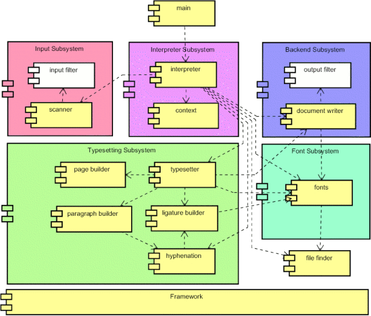

The state of development is associated to the following component diagram of ExTeX.
The input subsystem is responsible for reading from an input stream and tokenizes it. Two implementations for the scanner are fully functional. They provide a TeX-compatible and an extended functionality.
The concept of an input filter should provide a hook to preprocess the input before it is seen by the scanner. This component is currently a dummy.
The interpreter subsystem provides a TeX-compatible macro processor. This is based on a context which contains the state of the whole engine – like the eqtable of TeX.
The interpreter is nearly complete. Registers, conditionals, macros, file IO – including a configurable \write18 – are in place. Some functionality is not complete – like the outer flag for macros.
There are two implementation of the context. One with the TeX-compatible set of registers and one with additional registers – like real numbers. Those contexts are pretty stable. Onle the observability for tracing and debugging needs to be completed.
All primitives of TeX are present but not fully functional. Especially the primitives related to math typesetting and table typesetting need further attention. Some extensions from &eTeX; have already been implemented.
The typesetting subsystem is responsible of taking a stream of nodes and producing pages. In the course of this action several tasks have to be performed: hyphenation, ligature insertion, paragraph breaking, and page breaking.
The interfaces for the componets are defined. The implementation of several components has to be completed.
The task of the font subsystem is to provide the information about the glyphs in a font. Various types of fonts should be supported. Type-1 fonts and tfm fonts can already be processed. Other types like vf fonts have to be completed or completely implemented.
The backend subsystem takes the pages produced by the typesetter and generates the appropriate output format. Several backend imlementations have been started. Amoung them is a PDF backend, a DVI backend, and a XML (SVG) backend.
The different backends deserve further development.
The concept of an ouput filter completes the chain of processing by manipulation on the level of the output format. This component is not implemented at all.
The implementation of ExTeX is based on a component framework. This component framework provides means for managing the lifecycle of a component – especially the creation in factories. This includes services like configuration and logging. The framework is inspired by the Apache Avalon framework.
The framework is pretty stable. The functionality needed is provided. This part can be considered complete.
There are several minor components in ExTeX. Some are described here.
The start of processing consists of the finding of an input file. This applies to TeX documents, formats, fonts, etc. The task of finding files of different kinds is accomplished by file finders. The interface and infrastructure is in place. Several implementations of file finders are present. They can be selected and combined in the configuration.
The components of ExTeX are tied together by a main program. Currently a TeX-compatible command line main program is provided with ExTeX. This main program is pretty complete. Other main programs can be envisaged in the future.